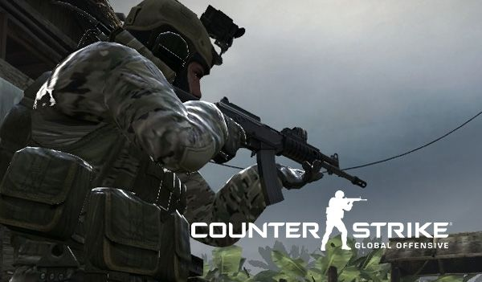

Another game where mods have drastically helped with increasing a game’s life span was Valve’s “Half-Life” by being turned into “Counter-Strike”. On an article on Nvidia’s website they explain the history by saying “In 1998 Valve released the ground-breaking first-person shooter Half Life. Two years later an individual coder, Minh Le, modded the base game to model the theme of terrorism and counterterrorism in Counter-Strike” . ‘Counter-Strike is coming up on its 20th anniversary and is still played today in some way, be it the original or the updated and rereleased version “Counter-Strike: Global Offensive” which reaches around 75,000 viewers on twitch at any given moment , whereas the base game “Half-Life” hasn’t quite fallen into obscurity but has experienced a substantial drop in players over the two decades since its release.
Counter Strike: Global Offensive